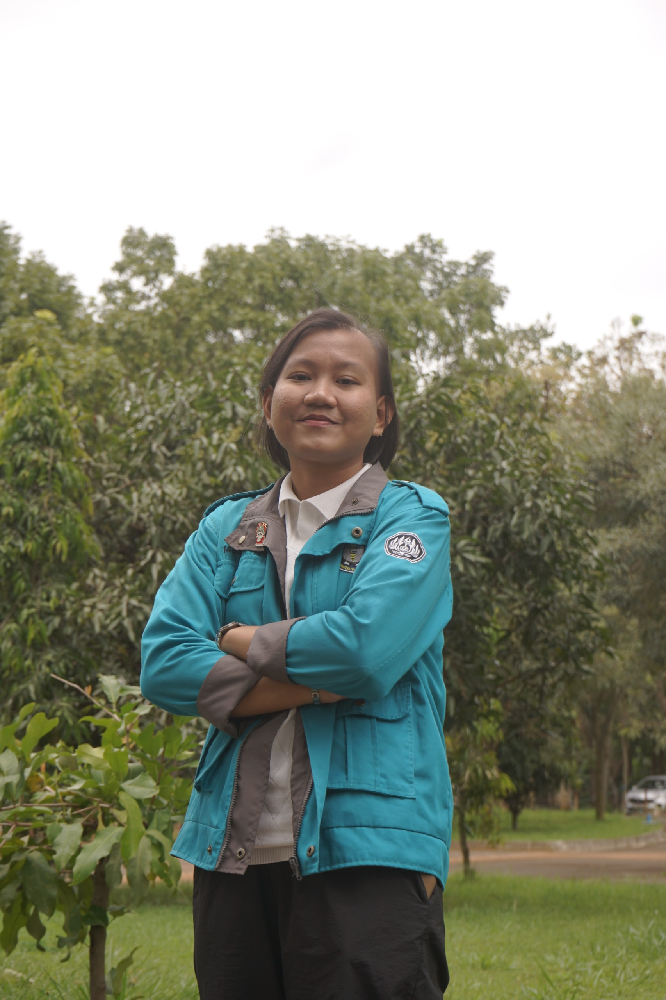
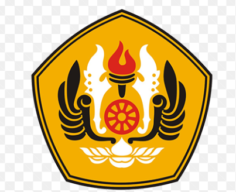
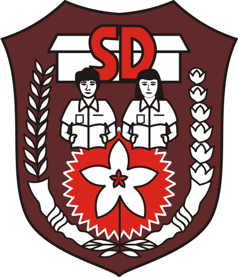

Hello, welcome to
Mahasiswi Teknik Elektro Universitas Padjadjaran yang terus belajar, berkembang, dan siap mengeksplor dunia teknologi.
Kenalan yuk →
Haloo! Aku Menova, mahasiswi aktif Program Studi Teknik Elektro Universitas Padjadjaran angkatan 2025 yang mulai memiliki ketertarikan pada dunia teknologi, mengeksplor diri, dan memanfaatkan setiap kesempatan untuk berkembang. Aktif diberbagai organisasi dan kepanitiaan.

Universitas Padjadjaran
Teknik Elektro
2025 – Sekarang
SMA Negeri 12 Bekasi
2022 – 2025
SMP Negeri 172 Jakarta
2019 – 2022

SD Negeri Kota Baru 2
2013 – 2019
🔧 Proyek
Proyek ini merupakan tugas besar mata kuliah Pemrograman 2, yaitu merancang robot yang mampu bergerak mengikuti jalur garis yang telah disediakan. Proyek ini merupakan kolaborasi antara hardware dan software menggunakan Arduino dan Sensor Inframerah sebagai komponen utama.
Merancang prototype multimeter menggunakan Arduino Uno sebagai komponen utama. Alat ini mampu mengukur tegangan dan arus yang ditampilkan pada layar LCD I2C, dilengkapi fitur waktu real-time menggunakan modul RTC.
🏛️ Organisasi
2026
2026 - Sekarang
2024 – 2026
2023 – 2024
📋 Kepanitiaan
2026
2025
2025
2026
Sampai jumpa!🌿